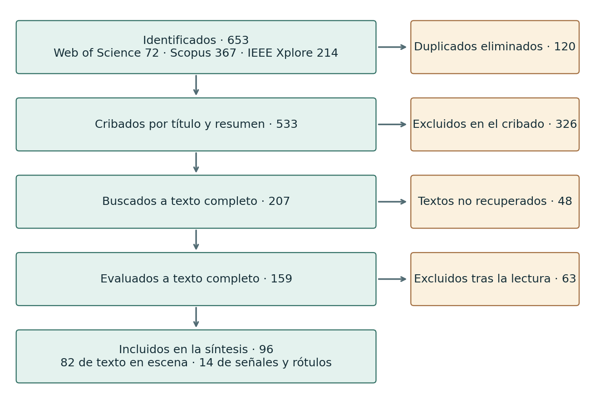

Estado del arte y elección de modelos#
La revisión examina cómo se han medido las predicciones sobre rótulos y qué característica de cada arquitectura merece ponerse a prueba. El benchmark compara FCN, SegNet, U-Net, DeepLab compacta y PSPNet compacta sobre la misma tarea de segmentación binaria.
3.1 Estrategia de búsqueda#
Bases, fecha y periodo. Web of Science Core Collection, Scopus e IEEE Xplore, consultadas el 8 de noviembre de 2026 con acceso institucional (Universidad del Norte; la exportación de Scopus se hizo por la Universidad del Magdalena). Periodo de publicación: 2018 a 2026. arXiv se revisó solo para detectar tendencias y no entra en los conteos.
Cadenas. Se usaron dos cadenas. La A busca el problema: rótulos de peligro y señales de seguridad. La B busca los problemas vecinos de donde salen los modelos base: señales de tránsito, letreros y texto en escena.
Cadena A, Web of Science: TS=((«hazard* material*» OR hazmat OR «dangerous goods» OR placard* OR «warning sign*» OR «safety sign*» OR «warning label*») AND («semantic segmentation» OR «image segmentation» OR «pixel-wise» OR «instance segmentation») AND («deep learning» OR «convolutional neural network*» OR CNN OR «U-Net» OR «fully convolutional»)) AND PY=(2018-2026)
Cadena A, Scopus: TITLE-ABS-KEY((«hazard* material*» OR hazmat OR «dangerous goods» OR placard* OR «warning sign*» OR «safety sign*» OR «warning label*») AND («semantic segmentation» OR «image segmentation» OR «pixel-wise» OR «instance segmentation») AND («deep learning» OR «convolutional neural network*» OR cnn OR «U-Net» OR «fully convolutional»)) AND PUBYEAR > 2017
Cadena A, IEEE Xplore (todos los metadatos): («hazardous material» OR hazmat OR «dangerous goods» OR placard OR «warning sign» OR «safety sign» OR «warning label») AND (segmentation) AND («deep learning» OR «convolutional neural network» OR «U-Net» OR «fully convolutional»), con filtro 2018-2026.
Cadena B, Web of Science: TS=((«traffic sign*» OR «road sign*» OR signboard* OR «scene text») AND («semantic segmentation» OR «image segmentation» OR «pixel-wise») AND («deep learning» OR «convolutional neural network*» OR «U-Net» OR «fully convolutional» OR SegNet)) AND PY=(2018-2026)
Cadena B, Scopus: TITLE-ABS-KEY((«traffic sign*» OR «road sign*» OR signboard* OR «scene text») AND («semantic segmentation» OR «image segmentation» OR «pixel-wise») AND («deep learning» OR «convolutional neural network*» OR «U-Net» OR «fully convolutional» OR segnet)) AND PUBYEAR > 2017
Cadena B, IEEE Xplore (todos los metadatos): («traffic sign» OR «road sign» OR signboard OR «scene text») AND («semantic segmentation» OR «image segmentation» OR «pixel-wise») AND («deep learning» OR «convolutional neural network» OR «U-Net» OR «fully convolutional» OR SegNet), con filtro 2018-2026.
Base |
Cadena A |
Cadena B |
Unión exportada |
|---|---|---|---|
Web of Science |
6 |
66 |
72 |
Scopus |
36 |
331 |
367 |
IEEE Xplore |
9 |
206 |
214 |
Total |
653 |
La cadena A casi no devuelve estudios del problema: ninguno segmenta rótulos de mercancías peligrosas. La segmentación de estos rótulos no tiene literatura propia de deep learning indexada en estas bases, y por eso los modelos base se extraen de los problemas vecinos.
Criterios de inclusión. (1) Usa una red neuronal profunda. (2) Predice una máscara por píxel, o la segmentación es un paso explícito del método. (3) El objeto es un rótulo, placa, señal, letrero o texto en escena. (4) Compara contra al menos un modelo de deep learning. (5) Reporta métricas numéricas verificables.
Criterios de exclusión.
Código |
Motivo |
Etapa |
|---|---|---|
E1 |
No usa deep learning |
cribado y texto completo |
E2 |
Solo cajas o clasificación de la imagen, sin salida por píxel |
cribado y texto completo |
E3 |
Dominio ajeno a rótulos, señales o texto en escena |
cribado y texto completo |
E4 |
No es estudio primario (revisión, editorial, tesis) |
cribado y texto completo |
E5 |
OCR de documentos escaneados |
cribado y texto completo |
E6 |
No compara contra ningún modelo de deep learning |
texto completo |
E7 |
Métricas no verificables (sin valores numéricos) |
texto completo |
Quién seleccionó. El cribado por título y resumen y la extracción en texto completo tuvieron una primera pasada asistida por IA, que aplicó los criterios escritos. El segundo revisor fueron los dos autores, por consenso, sobre una muestra ciega de 50 registros estratificada por decisión (semilla 20261108). La kappa de Cohen mide el acuerdo entre revisores descontando el que se daría por azar: fue 0,760 en tres clases (incluir, dudoso, excluir) y 0,797 en la decisión que mueve el registro (pasa o se excluye), un acuerdo «sustancial» en la escala de Landis y Koch. La regla de desacuerdo se fijó antes de resolverlos: el registro pasa a texto completo. Hubo 7 desacuerdos, y los 4 registros excluidos entre ellos pasaron a texto completo.
Diagrama de flujo (PRISMA 2020).


Figura 1 Flujo de la revisión (PRISMA 2020).#
Calidad de los estudios incluidos. Cada estudio se puntuó de 0 a 2 en cuatro criterios (n = 96):
Criterio |
0 |
1 |
2 |
|---|---|---|---|
Protocolo reproducible (datos, partición, hiperparámetros) |
4 |
53 |
39 |
Riesgo de fuga (2 = partición oficial o por escena; 0 = no se dice) |
16 |
5 |
75 |
Repeticiones (2 = cinco o más corridas; 0 = una) |
96 |
0 |
0 |
Inferencia (2 = prueba o intervalo; 1 = solo desviación estándar) |
94 |
1 |
1 |
Ningún estudio reporta más de una corrida y solo dos acompañan sus comparaciones de alguna medida de incertidumbre. Las diferencias entre modelos que se reportan en este campo son, por tanto, diferencias de una sola corrida, sin intervalo.
3.2 Identificación de los modelos base#
Tabla de frecuencia. Número de estudios incluidos que usan cada modelo de deep learning como comparación.
Modelo |
Todos (96) |
Texto en escena (82) |
Señales, rótulos y letreros (14) |
Segmentación semántica de señales (8) |
|---|---|---|---|---|
EAST |
40 |
39 |
1 |
0 |
SegLink |
29 |
29 |
0 |
0 |
TextSnake |
26 |
26 |
0 |
0 |
DBNet |
24 |
24 |
0 |
0 |
PSENet |
22 |
22 |
0 |
0 |
Mask R-CNN |
11 |
5 |
6 |
0 |
DeepLab (v3, v3+, LargeFOV, ASPP) |
6 |
3 |
3 |
3 |
PSPNet |
5 |
3 |
2 |
2 |
U-Net |
5 |
4 |
1 |
1 |
FCN |
3 |
1 |
2 |
2 |
ERFNet |
3 |
1 |
2 |
2 |
ENet |
2 |
0 |
2 |
2 |
SegNet |
1 |
1 |
0 |
0 |
Lectura. Los modelos más frecuentes en la muestra completa (EAST, SegLink, TextSnake, DBNet, PSENet) son detectores especializados de texto. Se evalúan con F-measure sobre cajas o polígonos, no con solapamiento de máscara, y no son modelos básicos de segmentación. Mask R-CNN es frecuente en señales, pero segmenta instancias en dos etapas y es el de mayor complejidad. El subgrupo pertinente para segmentar en binario un objeto gráfico es el de segmentación semántica de señales: 8 estudios (R072, R128, R212, R379, R429, R447, R455 y R522).
Regla de selección. Se ordenan los modelos del subgrupo por frecuencia y, a igual frecuencia, por menor complejidad. Se exige además que no sean redundantes (cada uno con un sesgo inductivo distinto) y que se puedan entrenar con el mismo pipeline. Con esa regla salen DeepLab (3), FCN (2) y PSPNet (2): FCN es la base sin decodificador, DeepLab añade contexto con convoluciones dilatadas y PSPNet añade contexto por agrupamiento piramidal. ENet y ERFNet (2 cada una) empatan en frecuencia, pero son variantes ligeras de codificador-decodificador orientadas a velocidad y no aportan un mecanismo distinto para este problema.
Modelos evaluados: cinco. El benchmark evalúa además SegNet y U-Net, los dos diseños clásicos de codificador-decodificador, para separar el efecto del contexto multiescala (DeepLab, PSPNet) del efecto de reconstruir el detalle espacial (SegNet, U-Net). El enunciado pide tres modelos base. Los tres que respalda la frecuencia son FCN, DeepLab y PSPNet; SegNet (0 estudios en el subgrupo) y U-Net (1) se incluyen como comparación complementaria y se registra como desviación del procedimiento.
Equivalencia con los modelos clásicos. Las cinco redes terminan en una convolución 1 × 1 que calcula, en cada píxel, una combinación lineal de su vector de rasgos z:
Con la sigmoide y la entropía cruzada, esa cabeza es exactamente una regresión logística por píxel. Con pérdida de bisagra sería una SVM lineal. Si el objetivo fuera continuo (por ejemplo, la fracción de rótulo en una ventana) y se usara la pérdida insensible a ε, sería una SVR lineal. Las cinco redes son, entonces, un modelo lineal clásico aplicado sobre rasgos aprendidos. Lo que las distingue es cómo construyen esos rasgos a resolución completa, y eso es lo que el benchmark compara.
3.3 Análisis por modelo base#
Notación común. La entrada es una imagen x de H × W × 3 y la salida, una probabilidad por píxel \(p_i\) de que el píxel pertenezca al rótulo. Una capa convolucional con núcleo \(k \times k\), \(C_i\) canales de entrada y \(C_o\) de salida calcula \(h = \mathrm{ReLU}(W * x + b)\) y tiene \((k^2 C_i + 1)C_o\) parámetros. Su costo en un mapa de \(H \times W\) es del orden de \(H W k^2 C_i C_o\). Las cinco redes se entrenan con la misma pérdida, que promedia la entropía cruzada binaria (error píxel a píxel) y la pérdida Dice (solapamiento de las máscaras, que da peso a un rótulo que ocupa poca superficie):
Ficha comparativa.
FCN |
SegNet |
U-Net |
DeepLab |
PSPNet |
|
|---|---|---|---|---|---|
Referencia |
Long et al. (2015) |
Badrinarayanan et al. (2017) |
Ronneberger et al. (2015) |
Chen et al. (2018) |
Zhao et al. (2017) |
Cómo recupera la resolución |
interpolación del mapa grueso |
max-unpooling con índices |
concatenación con el codificador |
dilatación, sin reducir tanto |
pirámide de agrupamiento + interpolación |
Contexto global |
no |
no |
no |
sí (ASPP) |
sí (pirámide) |
Parámetros del original |
~134 M (VGG-16) |
~29,5 M |
~31 M |
~44 M (ResNet-101) |
backbone ResNet-101 + módulo piramidal |
Parámetros de la versión compacta |
72.145 |
85.761 |
118.273 |
104.481 |
80.401 |
Resultado del artículo original |
VOC 2012 test: 62,2 mIoU |
CamVid: 60,1 mIoU |
ISBI 2015 PhC-U373: 0,920 IoU |
VOC 2012 test: 79,7 mIoU |
VOC 2012 test: 82,6 mIoU (85,4 con COCO) |
Dispersión reportada |
ninguna |
ninguna |
ninguna |
ninguna |
ninguna |
Ningún artículo original reporta dispersión entre corridas. Sus cifras usan otros datasets, otras clases y backbones preentrenados, así que no son comparables con las de este trabajo; sirven para ubicar cada diseño.
FCN, Fully Convolutional Network (Long, Shelhamer y Darrell, 2015)#
Arquitectura. Un codificador convolucional cuyo mapa final, reducido varias veces, se lleva a la resolución de entrada por interpolación. El original (VGG-16) convierte las capas densas en convoluciones y fusiona las predicciones de las etapas reducidas 32, 16 y 8 veces (FCN-8s):
La versión compacta tiene 7 capas convolucionales, un mapa de 64 × 64, una cabeza 1 × 1 y una interpolación bilineal sin pesos.
Supuestos. Invariancia a la traslación y localidad, como toda red convolucional, y además que la máscara se puede reconstruir interpolando un mapa grueso, sin parámetros que recuperen los bordes.
Datos y métricas del original. PASCAL VOC 2011-2012, NYUDv2 y SIFT Flow; mIoU; unos 175 ms por imagen en inferencia.
Fortalezas. Es el diseño más simple y barato y sirve como línea base mínima: cualquier ganancia de los demás se mide contra él.
Limitaciones. Bordes suavizados y objetos pequeños perdidos: un rótulo de 16 píxeles de lado ocupa unas 4 × 4 celdas en el mapa de 64 × 64.
SegNet (Badrinarayanan, Kendall y Cipolla, 2017)#
Arquitectura. Codificador tipo VGG y decodificador simétrico. Cada max-pooling guarda la posición del máximo, y el decodificador «desempaqueta» el mapa poniendo cada valor en esa posición y ceros en el resto antes de convolucionar:
Supuestos. Que la posición del máximo de cada ventana basta para restituir la geometría de los bordes.
Datos y métricas del original. CamVid y SUN RGB-D; exactitud global, exactitud media por clase y mIoU.
Fortalezas. Decodificador aprendido con poca memoria: solo guarda índices, no mapas completos. Bueno para inferencia con pocos recursos.
Limitaciones. El mapa desempaquetado es disperso (en cada etapa, tres de cada cuatro valores son cero) y la textura fina del codificador no llega al decodificador.
U-Net (Ronneberger, Fischer y Brox, 2015)#
Arquitectura. Codificador y decodificador simétricos. En cada etapa, el decodificador sube el mapa y lo concatena con el del codificador a la misma resolución:
Supuestos. Que los rasgos de baja escala del codificador (bordes, esquinas) sirven directamente para la máscara final. Es el sesgo más débil de los cinco: la red aprende cuánto usar de cada escala.
Datos y métricas del original. ISBI 2012 (membranas neuronales, warping error) e ISBI 2015 (seguimiento de células, IoU de 0,920 en PhC-U373 y de 0,776 en DIC-HeLa), con unas pocas decenas de imágenes de entrenamiento.
Fortalezas. Bordes nítidos y buen desempeño con pocos datos, que es nuestro caso.
Limitaciones. Más memoria de activaciones, porque guarda los mapas del codificador, y es la versión compacta con más parámetros. Sin módulo de contexto, su campo receptivo es limitado.
DeepLab (Chen, Papandreou, Kokkinos, Murphy y Yuille, 2018)#
Arquitectura. Reemplaza parte de la reducción por convoluciones dilatadas, que muestrean la entrada con huecos de tasa r y amplían el campo receptivo sin perder resolución ni añadir parámetros:
El módulo ASPP aplica varias tasas en paralelo y concatena las ramas. La versión compacta usa una rama 1 × 1, tres ramas 3 × 3 con dilataciones 2, 4 y 8 y una rama de promedio global, cada una de 16 canales; la cabeza fusiona los 80 canales y amplía los logits por interpolación bilineal.
Supuestos. Que el contexto a varias escalas ayuda a decidir si un píxel es rótulo, y que mantener la resolución del mapa es mejor que reconstruirla después.
Datos y métricas del original. PASCAL VOC 2012, PASCAL-Context, PASCAL-Person-Part y Cityscapes; mIoU. El original usa además un CRF denso como posproceso, que la versión compacta no tiene.
Fortalezas. Es el modelo base más frecuente en el subgrupo de señales (3 de 8 estudios). Capta el contexto sin un decodificador pesado.
Limitaciones. Con dilataciones grandes en mapas pequeños aparecen artefactos de rejilla, y el costo crece porque las capas operan a mayor resolución.
PSPNet, Pyramid Scene Parsing Network (Zhao, Shi, Qi, Wang y Jia, 2017)#
Arquitectura. Sobre el mapa profundo, un módulo de agrupamiento piramidal promedia en rejillas de 1 × 1, 2 × 2, 3 × 3 y 6 × 6, proyecta cada rama, la amplía y la concatena con el mapa original:
En la versión compacta, las cuatro ramas suman 64 canales, que se concatenan con los 64 del mapa profundo antes de la cabeza.
Supuestos. Que la información de la escena completa y de sus regiones (dónde suele estar un rótulo, qué lo rodea) reduce las confusiones locales.
Datos y métricas del original. ImageNet scene parsing (ADE20K), PASCAL VOC 2012 y Cityscapes (80,2 mIoU); mIoU y exactitud de píxel.
Fortalezas. Contexto global barato: el módulo piramidal añade pocos parámetros.
Limitaciones. Los bordes dependen de la interpolación final, como en FCN, y el agrupamiento global puede borrar objetos muy pequeños.
Desempeño reportado en el subgrupo de señales (una corrida, sin intervalo; la métrica y el dataset son los de cada estudio):
Estudio |
Dataset |
Métrica |
Modelos base y propuesto |
|---|---|---|---|
R455, Zhong et al. (2019) |
CTSD, 1.100 imágenes |
IoU % |
FCN 66,63; DeepLab-LargeFOV 72,14; DeepLab-ASPP 75,55; propuesto 77,17 |
R128, Ailing et al. (2024) |
propio, 914 imágenes |
mIoU |
HRNet 0,653; PSPNet 0,730; U-Net 0,762; DeepLabv3+ 0,773; propuesto 0,813 |
R429, Kamal et al. (2020) |
CURE-TSD |
mIoU |
PSPNet 0,26; DeepLabv3 0,35; propuesto 0,53 |
R447, Leonardi et al. (2019) |
GTSDB |
mIoU |
ENet 28,2; ESPNet 35,7; EDANet 37,9; ERFNet 41,2; propuesto 51,7 |
R522, Yang et al. (2018) |
Mapillary Vistas |
mIoU |
ENet 59,89; LinkNet 63,25; propuesto 67,09 |
En los dos estudios que comparan varios de nuestros modelos sobre el mismo dataset, el orden es el mismo: FCN por debajo de DeepLab (R455) y PSPNet por debajo de U-Net y de DeepLabv3+ (R128).
3.4 Comparación crítica y brecha#
Comparación entre los modelos base. Los cinco comparten codificador y cabeza, y se diferencian en una sola decisión: cómo vuelve la información a resolución completa. FCN no la recupera, SegNet la recupera con índices, U-Net con mapas completos, y DeepLab y PSPNet no la recuperan pero añaden contexto. Si el error dominante en los rótulos es de bordes, deberían ganar U-Net y SegNet; si es de confusión con el fondo, DeepLab y PSPNet. El benchmark permite separar las dos hipótesis.
Validez de los estudios. Tres de cada cuatro usan la partición oficial de un dataset público (riesgo de fuga bajo), pero el 17 % no dice cómo particiona. Ninguno repite corridas ni reporta intervalos, así que las diferencias entre modelos (de 1 a 18 puntos) no tienen incertidumbre asociada. Con la variabilidad entre semillas que se mide en este trabajo, parte de esas diferencias podría estar dentro del ruido. Los datasets cambian de estudio a estudio (CTSD, GTSDB, CURE-TSD, Mapillary, conjuntos propios), y por eso los valores no se pueden comparar entre filas.
Brecha entre modelos avanzados y modelos base. En el subgrupo de señales, el modelo propuesto de cada estudio supera al mejor modelo base que reporta por 1,6 (R455), 3,8 (R522), 4,0 (R128), 10,5 (R447) y 18 puntos (R429). La brecha típica está entre 2 y 10 puntos de IoU, siempre medida en una sola corrida. Esa es la referencia para juzgar si un modelo avanzado mejora de verdad sobre los modelos base de este trabajo.
Gap verificable. Ninguno de los 96 estudios incluidos (1) segmenta rótulos de mercancías peligrosas, (2) repite corridas, ni (3) compara modelos con inferencia estadística: 96 de 96 tienen una sola corrida y 94 de 96 no reportan prueba ni intervalo. Este trabajo aporta los tres: un problema sin literatura indexada, modelos base evaluados con varias semillas y comparaciones con pruebas formales.
3.5 Antecedentes del dominio fuera de la búsqueda sistemática#
Las cadenas sistemáticas no recuperan los estudios que tratan rótulos de mercancías peligrosas, porque estos detectan o clasifican el rótulo y no lo segmentan por píxel (criterio E2). Se incorporan por búsqueda manual, declarada, como contexto del problema; no entran en los conteos PRISMA ni en la tabla de frecuencia.
Fuentes de aplicación y criterios de lectura#
La matriz bibliográfica del proyecto identifica cada estudio por autor, tarea, método, datos, métricas, alcance de la lectura y aporte a la tesis. Para interpretar un resultado comprobamos qué se predice (caja, máscara, clase o texto) y sobre qué unidad se evalúa (imagen, rótulo o secuencia).
Fuente y lectura registrada |
Qué se evaluó |
Qué aporta a este entregable |
|---|---|---|
Emami (2026), tesis de maestría. Resumen y registro institucional. Repositorio |
Localización, clasificación visual y lectura condicional de texto. La matriz registra mAP@50 de 96,2 % para la primera etapa. |
Fundamenta la separación de tareas. Ese resultado corresponde a detección; el resumen no acredita máscaras de rótulos. |
Sharifi, Zibaei y Rezaei (2021). Texto completo. Artículo |
DeepHAZMAT detecta señales con YOLOv3-tiny y usa GrabCut y refinamiento geométrico para aislarlas. Los autores describen 1.685 fotografías originales y 13 categorías HAZMAT. |
Es el antecedente directo para localizar y aislar el rótulo. La prepublicación y el artículo publicado se citan como versiones de un solo estudio. Prepublicación |
Gaweesh, Khan y Ahmed (2021). Resumen editorial. Artículo |
Reconocimiento de información de rótulos en grabaciones de carretera mediante AlexNet. La matriz recoge una exactitud del 95 %. |
Aporta contexto sobre reconocimiento en transporte. La exactitud se refiere a identificación y no cuantifica el solapamiento de máscaras. |
Brylka, Bierwirth y Schwanecke (2021). Texto completo. Artículo |
YOLOv4-tiny detecta etiquetas de mercancías peligrosas; dos U-Net intervienen en el módulo de códigos de barras. Al umbral de 75 %, la precisión fue 97,6 %, el recall por imagen 38,5 % y la detección por secuencia 96,2 %. |
Una secuencia puede contener una detección aunque numerosos fotogramas individuales fallen. La presencia de U-Net en este artículo no demuestra su uso para segmentar el rótulo peligroso. |
Cómo rastrear las cifras. La hoja Matriz bibliografica, filas 5–8, contiene los cuatro registros. Evaluacion critica explica por qué se usa cada fuente y Referencias APA proporciona los identificadores. En Umbrales Brylka, la fila 10 conserva las tres cifras del umbral de 75 %. El F1 de esa hoja se calcula a partir de precisión y recall; se distingue de las cifras publicadas por los autores.
Recorrido de la revisión
Cuatro antecedentes de aplicación aprobados
├─ Texto completo → Sharifi et al. y Brylka et al.
└─ Resumen → Emami y Gaweesh et al.
↓
Lectura por tarea, métrica y unidad de evaluación
↓
Antecedente de máscaras → DeepHAZMAT (GrabCut)
Pregunta del experimento → comparar cinco redes de segmentación binaria
↑
Fundamentos de arquitectura → Long et al., Badrinarayanan et al., Ronneberger et al., Chen et al. y Zhao et al.
Búsqueda exploratoria complementaria#
Se documentaron nueve consultas exploratorias sobre el corpus y las arquitecturas. Las cadenas empleadas fueron las siguientes.
hazardous material placard segmentation dataset 1685 images 13 classes
hazmat placard segmentation dataset poison oxygen inhalation hazard VOC2012
SeaFront dataset hazardous goods placards segmentation baseline
"hazmat" "segmentation" "U-Net" "FCN"
"hazardous" "placard" "SegNet"
"HAZMAT13" "segmentation" "U-Net"
"hazmat" "U-Net" segmentation signs
"hazmat" "SegNet" segmentation
"hazmat" "FCN" segmentation
Artículos que fundamentan las cinco arquitecturas#
Artículo |
Datos y comparación |
Resultado o aporte |
Alcance para este experimento |
|---|---|---|---|
Long, Shelhamer y Darrell (2015), Fully Convolutional Networks for Semantic Segmentation. Artículo |
PASCAL VOC, NYUDv2 y SIFT Flow. Transfiere redes de clasificación a predicción densa |
62,2 % de IoU media en PASCAL VOC 2012 |
Fundamenta la salida espacial. PASCAL VOC del artículo y nuestro corpus de rótulos son distintos |
Badrinarayanan, Kendall y Cipolla, SegNet: A Deep Convolutional Encoder-Decoder Architecture for Image Segmentation (prepublicación 2015, revisión 2016). Artículo |
Escenas viales e interiores SUN RGB-D. Incluye FCN entre los comparadores |
Recupera posiciones con índices de máximos y estudia memoria frente a precisión |
Uso comparativo de FCN en escenas generales. SegNet es el método propuesto en ese artículo |
Ronneberger, Fischer y Brox (2015), U-Net: Convolutional Networks for Biomedical Image Segmentation. Artículo |
Segmentación biomédica, incluidas imágenes de microscopía |
Combina representación profunda y rasgos de alta resolución mediante concatenación |
Fundamenta la hipótesis sobre contornos. Su dominio y protocolo difieren del test HAZMAT |
Chen et al. (2017), DeepLabv3 |
Segmentación semántica en PASCAL VOC |
Convoluciones dilatadas y contexto global |
Motiva las ramas de contexto multiescala |
Zhao et al. (2017), PSPNet |
Segmentación de escenas, incluido Cityscapes |
Agrupación espacial en rejillas de distinta resolución |
Motiva los cuatro niveles de la pirámide regional |
Cómo leer las cifras publicadas. En CamVid, la variante de SegNet entrenada sobre 3,5 mil imágenes y evaluada tras 140 mil iteraciones obtuvo 60,10 % de mIoU. Su codificador sigue las 13 capas convolucionales de VGG16. En microscopía, U-Net obtuvo IoU 0,9203 en PhC-U373 y 0,7756 en DIC-HeLa. Las tablas citadas presentan estimaciones puntuales; no ofrecen una dispersión entre semillas comparable a la de estas corridas. Tanto la resolución y la definición de clase como la política de aumentos difieren entre protocolos. SegNet, tabla de CamVid · U-Net, tabla 2
Qué se puede comparar. La matriz destaca un riesgo concreto en Sharifi et al.: al aumentar el número de imágenes, importa en qué momento se separan las fotografías originales y sus variantes. Para nuestro experimento, todas las imágenes conectadas por los enlaces de similitud detectados se asignan al mismo grupo antes de la partición. En Brylka et al., la diferencia entre recall por imagen y detección por secuencia ilustra por qué también declaramos la unidad de evaluación.
En el antecedente directo, Sharifi y colaboradores informan 87,65 % de IoU y 97,58 % de F1 como promedios sobre las 13 categorías. La tabla del artículo no ofrece IC para esos promedios. Aquí se evalúa una máscara binaria por imagen y se pondera por grupo de similitud. Restar directamente ambos resultados mezclaría definiciones de clase, unidad de agregación y particiones. La verificación del artículo publicado complementa la lectura histórica de su prepublicación. Sharifi et al., tabla 3
Decisión experimental. FCN reconstruye desde un mapa grueso, SegNet recupera posiciones de máximos, U-Net reutiliza características superficiales, DeepLab combina campos receptivos de distintos tamaños y PSPNet agrega información regional. La comparación mide cuánto aporta cada diseño bajo un presupuesto común.
Anexo A. Tabla de síntesis: estudios de señales, rótulos y letreros (n = 14)#
Estudio |
Dataset |
Modelo propuesto |
Métrica |
Propuesto |
Modelos base de DL |
|---|---|---|---|---|---|
R522, Yang et al. (2018) |
Mapillary Vistas; Pedestrian Crossing Lights (Chi… |
ERF-PSPNet |
mIoU (11 clases de navegacion) |
ERF-PSPNet=67.09 |
ENet=59.89; LinkNet=63.25 |
R447, Leonardi et al. (2019) |
Cityscapes; GTSDB; Lane Markings; Mapillary Vistas |
Entrenamiento multi-dataset: un codific… |
mIoU (GTSDB, entrenado en Cityscap… |
— |
GUNet=51.7; iGUM-Net=38.4; ENet=28.2; ESPNet=35.7; ERFNet=41.2; EDANet=37.9 |
R455, S. Zhong et al. (2019) |
CTSD (1100 imágenes) |
DenseNet + LMAM (atención multiescala l… |
IoU (%), todas las escalas |
77.17 |
FCN=66.63; DeepLab-LargeFOV=72.14; DeepLab-ASPP=75.55 |
R425, E. Hrustic et al. (2020) |
GTSDB; GTSRB (vertices anotados a mano) |
RetinaNet + regresion directa de vertic… |
IoU (bordes) y mAP (deteccion) |
IoU 0.823 |
Mask R-CNN=0.767 |
R429, Kamal et al. (2020) |
CURE-TSD; GTSDB; CURE-TSR (clasificador) |
SegU-Net con perdida Tversky y restricc… |
mIoU |
0.53 |
PSPNet=0.26; DeepLabv3=0.35 |
R443, Hassan et al. (2020) |
imágenes propias de semáforo peatonal (Singapur):… |
HSV + clasificador CNN (AlexNet) |
exactitud promedio (%) |
HSV+CNN=92.75 |
Mask R-CNN+CNN=89.25 |
R330, H. Qian et al. (2021) |
TT-100K-HHU (TT-100K ampliado con 9296 imagenes d… |
Mask R-CNN mejorado (ResNet-50-FPN + 3 … |
mask mAP@[0.5:0.95] |
0.644 (con aumento de datos) |
Mask R-CNN ResNet-50-FPN con aumento=0.607 |
R379, Sanjeewani et al. (2021) |
AusRAP Queensland (propio, 549 entrenamiento y 10… |
FCN (VGG19) con una clase para señales … |
exactitud por atributo (señal) |
media simple de 11 clases=94.… |
FCN con voto por píxel: media simple=42.97 (calculada) |
R309, Zhang et al. (2022) |
Conjunto propio de ROI de letreros y placas de ca… |
Cascade Mask R-CNN con Swin-B (canal de… |
mask mAP@[0.5:0.95] |
0.656 (Swin-B) |
Mask R-CNN (Swin-S)=0.563 |
R212, Gouda et al. (2023) |
LiDAR móvil de 7 tramos de carretera en Alberta (… |
PointNet++ modificado (rasgos geométric… |
F1 por señal |
0.98 |
— |
R213, Yao et al. (2023) |
ZCTSDB; ZCTSDB-lightness |
Mejora de iluminación + Mask R-CNN (Res… |
mAP de segmentación (mAPseg) |
74.906 |
Mask R-CNN=74.734 |
R128, Ailing et al. (2024) |
Conjunto propio Chang’an (914 imágenes, 7 clases) |
DeepSwin (DeepLabv3+ con Swin y CSFA) |
mIoU |
DeepSwin=0.813 |
HRNet=0.653; PSPNet=0.730; U-Net=0.762; DeepLabv3+=0.773 |
R162, Siow et al. (2024) |
Conjunto propio UTHM (señales de frente, 320 imág… |
YOLACT (ResNet-101) |
mask mAP |
YOLACT-R101=96.52 |
Mask R-CNN-R101=93.75; Mask R-CNN-R50=87.50 |
R072, Wang et al. (2025) |
ME-Seg (propio, 2000 imágenes) |
DLS-Net |
mIoU |
75.61 |
— |
La tabla completa de los 96 estudios incluidos está en productos/tabla_sintesis.csv.
Referencias#
Modelos y método
Badrinarayanan, V., Kendall, A. y Cipolla, R. (2017). SegNet: A deep convolutional encoder-decoder architecture for image segmentation. IEEE Transactions on Pattern Analysis and Machine Intelligence, 39(12), 2481-2495. https://doi.org/10.1109/TPAMI.2016.2644615
Chen, L.-C., Papandreou, G., Kokkinos, I., Murphy, K. y Yuille, A. L. (2018). DeepLab: Semantic image segmentation with deep convolutional nets, atrous convolution, and fully connected CRFs. IEEE Transactions on Pattern Analysis and Machine Intelligence, 40(4), 834-848. https://doi.org/10.1109/TPAMI.2017.2699184
Long, J., Shelhamer, E. y Darrell, T. (2015). Fully convolutional networks for semantic segmentation. En Proceedings of the IEEE Conference on Computer Vision and Pattern Recognition (pp. 3431-3440). https://doi.org/10.1109/CVPR.2015.7298965
Page, M. J. et al. (2021). The PRISMA 2020 statement: An updated guideline for reporting systematic reviews. BMJ, 372, n71. https://doi.org/10.1136/bmj.n71
Ronneberger, O., Fischer, P. y Brox, T. (2015). U-Net: Convolutional networks for biomedical image segmentation. En Medical Image Computing and Computer-Assisted Intervention - MICCAI 2015 (pp. 234-241). Springer. https://doi.org/10.1007/978-3-319-24574-4_28
Zhao, H., Shi, J., Qi, X., Wang, X. y Jia, J. (2017). Pyramid scene parsing network. En Proceedings of the IEEE Conference on Computer Vision and Pattern Recognition (pp. 2881-2890). https://doi.org/10.1109/CVPR.2017.660
Landis, J. R. y Koch, G. G. (1977). The measurement of observer agreement for categorical data. Biometrics, 33(1), 159-174. https://doi.org/10.2307/2529310
Simonyan, K. y Zisserman, A. (2015). Very deep convolutional networks for large-scale image recognition. International Conference on Learning Representations. arXiv:1409.1556
Estudios incluidos en la revisión (n = 96)
[R219] A. Soni et al. (2023). Supervised Attention Network for Arbitrary-Shaped Text Detection in Edge-Fainted Noisy Scene Images. IEEE Transactions on Computational Social Systems. https://doi.org/10.1109/TCSS.2022.3153557
[R128] Ailing et al. (2024). Semantic Segmentation of Road Traffic Sign based on Improved Deeplabv3+. 2024 9th International Conference on Computer and Communication Systems, ICCCS 2024. https://doi.org/10.1109/ICCCS61882.2024.10603050
[R305] Ali et al. (2022). GMIF: A Gated Multiscale Input Feature Fusion Scheme for Scene Text Detection. IEEE ACCESS. https://doi.org/10.1109/ACCESS.2022.3203691
[R156] Almusawi et al. (2024). Maximum Entropy Scaled Super-Pixel Segmentation for Effective Text Detection. 2nd IEEE International Conference on Data Science and Network Security, ICDSNS 2024. https://doi.org/10.1109/ICDSNS62112.2024.10691129
[R159] B. Chen et al. (2024). LR-DiffText: Low Resolution Scene Text Detection Based on Diffusion Probabilistic Model. 2024 International Joint Conference on Neural Networks (IJCNN). https://doi.org/10.1109/IJCNN60899.2024.10651215
[R385] Bonechi et al. (2020). Weak supervision for generating pixel–level annotations in scene text segmentation. Pattern Recognition Letters. https://doi.org/10.1016/j.patrec.2020.06.023
[R474] C. -S. Yang et al. (2019). High Accuracy Text Detection using ResNet as Feature Extractor. 2019 IEEE Eurasia Conference on IOT, Communication and Engineering (ECICE). https://doi.org/10.1109/ECICE47484.2019.8942666
[R441] C. He et al. (2020). A Novel Method for Curved Scene Text Detection. 2020 Chinese Control And Decision Conference (CCDC). https://doi.org/10.1109/CCDC49329.2020.9164414
[R239] C. Xu et al. (2023). MorphText: Deep Morphology Regularized Accurate Arbitrary-Shape Scene Text Detection. IEEE Transactions on Multimedia. https://doi.org/10.1109/TMM.2022.3172547
[R313] C. Zhang et al. (2022). Character-Level Street View Text Spotting Based on Deep Multisegmentation Network for Smarter Autonomous Driving. IEEE Transactions on Artificial Intelligence. https://doi.org/10.1109/TAI.2021.3116216
[R471] Chen et al. (2019). Irregular scene text detection via attention guided border labeling. Science China Information Sciences. https://doi.org/10.1007/s11432-019-2673-8
[R267] Chen et al. (2023). A New Strategy for Reducing Errors in Scene Text Detection. 2023 4th International Conference on Computer Vision, Image and Deep Learning, CVIDL 2023. https://doi.org/10.1109/CVIDL58838.2023.10166555
[R498] Dai et al. (2019). A Novel Method for Text Detection in Arbitrary Scenes Based on Multi-scale Segmentation Networks. Proceedings of the 31st Chinese Control and Decision Conference, CCDC 2019. https://doi.org/10.1109/CCDC.2019.8833432
[R226] Dang et al. (2023). Scene Text Segmentation by Paired Data Synthesis. Proceedings - International Conference on Image Processing, ICIP. https://doi.org/10.1109/ICIP49359.2023.10222845
[R225] Dang et al. (2023). Scene Text Segmentation via Multi-Task Cascade Transformer With Paired Data Synthesis. IEEE Access. https://doi.org/10.1109/ACCESS.2023.3292264
[R517] Deng et al. (2018). PixelLink: Detecting scene text via instance segmentation. 32nd AAAI Conference on Artificial Intelligence, AAAI 2018.
[R452] Du et al. (2019). TextEdge: Multi-oriented scene text detection via region segmentation and edge classification. Proceedings of the International Conference on Document Analysis and Recognition, ICDAR. https://doi.org/10.1109/ICDAR.2019.00067
[R425] E. Hrustic et al. (2020). Deep Learning Based Traffic Signs Boundary Estimation. 2020 IEEE Intelligent Vehicles Symposium (IV). https://doi.org/10.1109/IV47402.2020.9304590
[R516] Feng et al. (2018). Scene Text Detection with Recurrent Instance Segmentation. Proceedings - International Conference on Pattern Recognition. https://doi.org/10.1109/ICPR.2018.8545073
[R241] Fu et al. (2023). Learning Pixel Affinity Pyramid for Arbitrary-Shaped Text Detection. ACM Transactions on Multimedia Computing, Communications and Applications. https://doi.org/10.1145/3524617
[R484] Gao et al. (2019). Convolutional Regression Network for Multi-Oriented Text Detection. IEEE Access. https://doi.org/10.1109/ACCESS.2019.2929819
[R212] Gouda et al. (2023). Traffic sign extraction using deep hierarchical feature learning and mobile light detection and ranging (LiDAR) data on rural highways. Journal of Intelligent Transportation Systems: Technology, Planning, and Operations. https://doi.org/10.1080/15472450.2022.2074792
[R068] Guo et al. (2025). Multilingual natural scene text detection via global feature fusion: Multilingual natural scene text detection via global feature fusion: H. Guo et al.. Applied Intelligence. https://doi.org/10.1007/s10489-024-05951-8
[R470] H. Kuang et al. (2019). Location Sensitive Regression Algorithm for Multi-oriented Scene Text Detection with Focal Loss. 2019 11th International Conference on Measuring Technology and Mechatronics Automation (ICMTMA). https://doi.org/10.1109/ICMTMA.2019.00108
[R417] H. Liu et al. (2020). Hull Number Detection for Ship Images Based on Image Super-Resolution. 2020 13th International Congress on Image and Signal Processing, BioMedical Engineering and Informatics (CISP-BMEI). https://doi.org/10.1109/CISP-BMEI51763.2020.9263636
[R330] H. Qian et al. (2021). Traffic Signs Detection and Segmentation Based on the Improved Mask R-CNN. 2021 40th Chinese Control Conference (CCC). https://doi.org/10.23919/CCC52363.2021.9549552
[R288] H. Wang et al. (2022). Research on Text Detection Algorithm based on Improved FPN. 2022 IEEE 6th Advanced Information Technology, Electronic and Automation Control Conference (IAEAC ). https://doi.org/10.1109/IAEAC54830.2022.9929716
[R443] Hassan et al. (2020). A Comparative Study on HSV-based and Deep Learning-based Object Detection Algorithms for Pedestrian Traffic Light Signal Recognition. 2020 3rd International Conference on Intelligent Autonomous Systems, ICoIAS 2020. https://doi.org/10.1109/ICoIAS49312.2020.9081854
[R140] He et al. (2024). Research on Legal Text Extraction and Recognition Based on Deep Learning. ACM International Conference Proceeding Series. https://doi.org/10.1145/3671151.3671328
[R357] J. Chen et al. (2021). Knowledge Distillation via Entropy Map for Scene Text Detection. 2021 16th International Conference on Computer Science & Education (ICCSE). https://doi.org/10.1109/ICCSE51940.2021.9569689
[R439] J. Liu et al. (2020). ASTS: A Unified Framework for Arbitrary Shape Text Spotting. IEEE Transactions on Image Processing. https://doi.org/10.1109/TIP.2020.2984082
[R496] J. Zhang et al. (2019). A Text Localization Method Based on Weak Supervision. 2019 International Conference on Document Analysis and Recognition (ICDAR). https://doi.org/10.1109/ICDAR.2019.00129
[R321] Jin et al. (2022). A deep learning based scene text detector combining two strategies. ACM International Conference Proceeding Series. https://doi.org/10.1145/3579654.3579676
[R402] K. Dasgupta et al. (2020). Scale-Invariant Multi-Oriented Text Detection in Wild Scene Image. 2020 IEEE International Conference on Image Processing (ICIP). https://doi.org/10.1109/ICIP40778.2020.9191102
[R429] Kamal et al. (2020). Automatic Traffic Sign Detection and Recognition Using SegU-Net and a Modified Tversky Loss Function with L1-Constraint. IEEE Transactions on Intelligent Transportation Systems. https://doi.org/10.1109/TITS.2019.2911727
[R220] L. Li et al. (2023). StrokeNet: Stroke Assisted and Hierarchical Graph Reasoning Networks. IEEE Transactions on Multimedia. https://doi.org/10.1109/TMM.2022.3198017
[R447] Leonardi et al. (2019). Training efficient semantic segmentation CNNs on multiple datasets. Lecture Notes in Computer Science (including subseries Lecture Notes in Artificial Intelligence and Lecture Notes in Bioinformatics). https://doi.org/10.1007/978-3-030-30645-8_28
[R314] Li (2022). CSNet-PGNet: Algorithm for Scene Text Detection and Recognition. 2022 3rd International Conference on Computer Vision, Image and Deep Learning and International Conference on Computer Engineering and Applications, CVIDL and ICCEA 2022. https://doi.org/10.1109/CVIDLICCEA56201.2022.9824815
[R457] Liao et al. (2019). Scene text recognition from two-dimensional perspective. 33rd AAAI Conference on Artificial Intelligence, AAAI 2019, 31st Innovative Applications of Artificial Intelligence Conference, IAAI 2019 and the 9th AAAI Symposium on Educational Advances in Artificial Intelligence, EAAI 2019. https://doi.org/10.1609/aaai.v33i01.33018714
[R492] Liu et al. (2019). AB-LSTM: Attention-based Bidirectional LSTM Model for Scene Text Detection. ACM TRANSACTIONS ON MULTIMEDIA COMPUTING COMMUNICATIONS AND APPLICATIONS. https://doi.org/10.1145/3356728
[R479] Liu et al. (2019). Enhancing Scene Text Detection via Fused Semantic Segmentation Network with Attention. Lecture Notes in Computer Science (including subseries Lecture Notes in Artificial Intelligence and Lecture Notes in Bioinformatics). https://doi.org/10.1007/978-3-030-05710-7_44
[R458] Liu et al. (2019). Scene text detection with fully convolutional neural networks. Multimedia Tools and Applications. https://doi.org/10.1007/s11042-019-7177-4
[R433] Liu et al. (2020). Arbitrarily Shaped Scene Text Detection with a Mask Tightness Text Detector. IEEE Transactions on Image Processing. https://doi.org/10.1109/TIP.2019.2954218
[R307] Lobanova et al. (2022). Development of software for the segmentation of text areas in real-scene images. Computer Optics. https://doi.org/10.18287/2412-6179-CO-1047
[R475] M. Cao et al. (2019). GISCA: Gradient-Inductive Segmentation Network With Contextual Attention for Scene Text Detection. IEEE Access. https://doi.org/10.1109/ACCESS.2019.2915513
[R291] M. Chen et al. (2022). Research of Scene Text Detection Algorithms. 2022 5th International Conference on Intelligent Robotics and Control Engineering (IRCE). https://doi.org/10.1109/IRCE55557.2022.9963115
[R354] M. Liao et al. (2021). Mask TextSpotter: An End-to-End Trainable Neural Network for Spotting Text with Arbitrary Shapes. IEEE Transactions on Pattern Analysis and Machine Intelligence. https://doi.org/10.1109/TPAMI.2019.2937086
[R132] N. Wen (2024). Scene Text Detection in Medical Based on Differentiable Binarization. 2024 IEEE 16th International Conference on Computational Intelligence and Communication Networks (CICN). https://doi.org/10.1109/CICN63059.2024.10847482
[R183] Naim et al. (2024). Context-Attention Architecture for Multi-Oriented Text Detection. ISIVC 2024 - Proceedings: 12th IEEE International Symposium on Signal, Image, Video, and Communications. https://doi.org/10.1109/ISIVC61350.2024.10577783
[R325] Nandanwar et al. (2022). A New Deep Wavefront Based Model for Text Localization in 3D Video. IEEE TRANSACTIONS ON CIRCUITS AND SYSTEMS FOR VIDEO TECHNOLOGY. https://doi.org/10.1109/TCSVT.2021.3110990
[R442] P. Cheng et al. (2020). A Direct Regression Scene Text Detector With Position-Sensitive Segmentation. IEEE Transactions on Circuits and Systems for Video Technology. https://doi.org/10.1109/TCSVT.2019.2947475
[R424] P. Dai et al. (2020). Deep Multi-Scale Context Aware Feature Aggregation for Curved Scene Text Detection. IEEE Transactions on Multimedia. https://doi.org/10.1109/TMM.2019.2952978
[R519] P. Lyu et al. (2018). Multi-oriented Scene Text Detection via Corner Localization and Region Segmentation. 2018 IEEE/CVF Conference on Computer Vision and Pattern Recognition. https://doi.org/10.1109/CVPR.2018.00788
[R412] Pan et al. (2020). Multi-oriented Scene Text Detector with Atrous Convolution. 2020 Information Communication Technologies Conference, ICTC 2020. https://doi.org/10.1109/ICTC49638.2020.9123297
[R171] Q. Mu et al. (2024). Gradient Adjustment for better Differentiable Binarization in scene text detection. 2024 5th International Conference on Artificial Intelligence and Electromechanical Automation (AIEA). https://doi.org/10.1109/AIEA62095.2024.10692431
[R483] Q. Wang et al. (2019). DeepText: Detecting Text from the Wild with Multi-ASPP-Assembled DeepLab. 2019 International Conference on Document Analysis and Recognition (ICDAR). https://doi.org/10.1109/ICDAR.2019.00042
[R335] R. S. Munjal et al. (2021). TeLCoS: OnDevice Text Localization with Clustering of Script. 2021 International Joint Conference on Neural Networks (IJCNN). https://doi.org/10.1109/IJCNN52387.2021.9533292
[R124] R. Wang et al. (2024). TTDNet: An End-to-End Traffic Text Detection Framework for Open Driving Environments. IEEE Transactions on Intelligent Transportation Systems. https://doi.org/10.1109/TITS.2024.3479884
[R531] Ruan et al. (2018). A novel method for fast arbitrary-oriented scene text detection. Proceedings of the 30th Chinese Control and Decision Conference, CCDC 2018. https://doi.org/10.1109/CCDC.2018.8407393
[R386] S. Anand et al. (2020). W-A net: Leveraging Atrous and Deformable Convolutions for Efficient Text Detection. 2020 Digital Image Computing: Techniques and Applications (DICTA). https://doi.org/10.1109/DICTA51227.2020.9363428
[R468] S. Shivajirao et al. (2019). Mask R-CNN End-to-End Text Detection and Recognition. 2019 18th IEEE International Conference On Machine Learning And Applications (ICMLA). https://doi.org/10.1109/ICMLA.2019.00289
[R152] S. Wu et al. (2024). On Exploring Robustness of Scene Text Detection. 2024 China Automation Congress (CAC). https://doi.org/10.1109/CAC63892.2024.10864497
[R349] S. Zhang et al. (2021). OPMP: An Omnidirectional Pyramid Mask Proposal Network for Arbitrary-Shape Scene Text Detection. IEEE Transactions on Multimedia. https://doi.org/10.1109/TMM.2020.2978630
[R455] S. Zhong et al. (2019). Semantic Segmentation Network with Local Multi-Scale Attention for Locating Traffic Sign. 2019 12th International Conference on Intelligent Computation Technology and Automation (ICICTA). https://doi.org/10.1109/ICICTA49267.2019.00080
[R379] Sanjeewani et al. (2021). A Novel Evolving Classifier with a False Alarm Class for Speed Limit Sign Recognition. 2021 IEEE Congress on Evolutionary Computation, CEC 2021 - Proceedings. https://doi.org/10.1109/CEC45853.2021.9504710
[R251] Shu et al. (2023). EI2SR: Learning an Enhanced Intra-Instance Semantic Relationship for Arbitrary-Shaped Scene Text Detection. ICASSP, IEEE International Conference on Acoustics, Speech and Signal Processing - Proceedings. https://doi.org/10.1109/ICASSP49357.2023.10096106
[R022] Shwetha et al. (2026). Deep Learning-Based Automatic Video-to-Text Transcription System. ICKECS 2026 - Proceedings of 4th IEEE International Conference on Knowledge Engineering and Communication Systems. https://doi.org/10.1109/ICKECS70176.2026.11528000
[R162] Siow et al. (2024). Instance Segmentation Evaluation for Traffic Signs. Journal of Advanced Research in Applied Sciences and Engineering Technology. https://doi.org/10.37934/araset.34.2.327341
[R480] W. Wang et al. (2019). Efficient and Accurate Arbitrary-Shaped Text Detection With Pixel Aggregation Network. 2019 IEEE/CVF International Conference on Computer Vision (ICCV). https://doi.org/10.1109/ICCV.2019.00853
[R395] Wan et al. (2020). TextScanner: Reading characters in order for robust scene text recognition. AAAI 2020 - 34th AAAI Conference on Artificial Intelligence.
[R339] Wang et al. (2021). Semi-Supervised Pixel-Level Scene Text Segmentation by Mutually Guided Network. IEEE Transactions on Image Processing. https://doi.org/10.1109/TIP.2021.3113157
[R284] Wang et al. (2022). Semantic Compensation Based Dual-Stream Feature Interaction Network for Multi-oriented Scene Text Detection. 2022 IEEE International Conference on Visual Communications and Image Processing, VCIP 2022. https://doi.org/10.1109/VCIP56404.2022.10008831
[R268] Wang et al. (2023). A Multi-scale Domain Adaptive Framework for Scene Text Detection. 2023 3rd International Conference on Neural Networks, Information and Communication Engineering, NNICE 2023. https://doi.org/10.1109/NNICE58320.2023.10105723
[R247] Wang et al. (2023). Enhancing Scene Text Segmentation through Subtask Decomposition. 2023 International Conference on Image Processing, Computer Vision and Machine Learning, ICICML 2023. https://doi.org/10.1109/ICICML60161.2023.10424830
[R233] Wang et al. (2023). Region-Aware Arbitrary-Shaped Text Detection With Progressive Fusion. IEEE Transactions on Multimedia. https://doi.org/10.1109/TMM.2022.3181448
[R072] Wang et al. (2025). ME-Seg&DLS-Net: A Dataset and a Network for Autonomous Driving Based on Multi-Element Semantic Segmentation of Pavement. IEEE Transactions on Emerging Topics in Computational Intelligence. https://doi.org/10.1109/TETCI.2024.3423437
[R297] X. Chen et al. (2022). Pixel-level end-to-end dual-channel bill text detection based algorithm. 2022 7th International Conference on Intelligent Computing and Signal Processing (ICSP). https://doi.org/10.1109/ICSP54964.2022.9778469
[R080] X. Han et al. (2025). Focus Entirety and Perceive Environment for Arbitrary-Shaped Text Detection. IEEE Transactions on Multimedia. https://doi.org/10.1109/TMM.2024.3521797
[R025] X. Han et al. (2026). Balancing Optimization Strategies and Practical Goals: An Efficient Scene Text Detector. IEEE Transactions on Multimedia. https://doi.org/10.1109/TMM.2025.3623548
[R431] X. Jiang et al. (2020). Arbitrary-Shaped Text Detection With Adaptive Text Region Representation. IEEE Access. https://doi.org/10.1109/ACCESS.2020.2999069
[R380] X. Liu et al. (2021). A Multi-Level Feature Fusion Network For Scene Text Detection with Text Attention Mechanism. 2021 IEEE 4th Advanced Information Management, Communicates, Electronic and Automation Control Conference (IMCEC). https://doi.org/10.1109/IMCEC51613.2021.9482108
[R432] X. Qin et al. (2020). Arbitrary Shape Natural Scene Text Detection Method Based on Soft Attention Mechanism and Dilated Convolution. IEEE Access. https://doi.org/10.1109/ACCESS.2020.3007351
[R493] Xiao et al. (2019). A text-context-aware CNN network for multi-oriented and multi-language scene text detection. Proceedings of the International Conference on Document Analysis and Recognition, ICDAR. https://doi.org/10.1109/ICDAR.2019.00116
[R123] Xu et al. (2024). Text Position-Aware Pixel Aggregation Network With Adaptive Gaussian Threshold: Detecting Text in the Wild. IEEE Transactions on Circuits and Systems for Video Technology. https://doi.org/10.1109/TCSVT.2023.3285096
[R070] Y. Tan et al. (2025). Method for Identifying Power Identification Board Under Tilt Angle Based on Geometric Correction and Attention Enhancement. 2025 4th International Conference on Smart Grids and Energy Systems (SGES). https://doi.org/10.1109/SGES66701.2025.11155936
[R451] Y. Xu et al. (2019). TextField: Learning a Deep Direction Field for Irregular Scene Text Detection. IEEE Transactions on Image Processing. https://doi.org/10.1109/TIP.2019.2900589
[R522] Yang et al. (2018). Intersection Perception Through Real-Time Semantic Segmentation to Assist Navigation of Visually Impaired Pedestrians. 2018 IEEE International Conference on Robotics and Biomimetics, ROBIO 2018. https://doi.org/10.1109/ROBIO.2018.8665211
[R191] Yang et al. (2024). Buffer-text: Detecting arbitrary shaped text in natural scene image. Engineering Applications of Artificial Intelligence. https://doi.org/10.1016/j.engappai.2023.107774
[R213] Yao et al. (2023). Traffic sign detection and recognition under low illumination. Machine Vision and Applications. https://doi.org/10.1007/s00138-023-01417-y
[R131] Z. Chen (2024). Scene Text Detection using Hyperbolic Tangent Binarization and CLIP. 2024 6th International Conference on Robotics, Intelligent Control and Artificial Intelligence (RICAI). https://doi.org/10.1109/RICAI64321.2024.10910961
[R467] Z. Huang et al. (2019). Mask R-CNN With Pyramid Attention Network for Scene Text Detection. 2019 IEEE Winter Conference on Applications of Computer Vision (WACV). https://doi.org/10.1109/WACV.2019.00086
[R309] Zhang et al. (2022). Deep-learning generation of POI data with scene images. ISPRS Journal of Photogrammetry and Remote Sensing. https://doi.org/10.1016/j.isprsjprs.2022.04.004
[R260] Zhang et al. (2023). Arbitrary Shape Text Detection via Segmentation With Probability Maps. IEEE Transactions on Pattern Analysis and Machine Intelligence. https://doi.org/10.1109/TPAMI.2022.3176122
[R502] Zhao et al. (2019). A 307-fps 351.7-GOPs/W Deep Learning FPGA Accelerator for Real-Time Scene Text Recognition. Proceedings - 2019 International Conference on Field-Programmable Technology, ICFPT 2019. https://doi.org/10.1109/ICFPT47387.2019.00043
[R334] Zhu et al. (2021). TextMountain: Accurate scene text detection via instance segmentation. Pattern Recognition. https://doi.org/10.1016/j.patcog.2020.107336
[R273] Zhu et al. (2022). TransText: Improving scene text detection via transformer. DIGITAL SIGNAL PROCESSING. https://doi.org/10.1016/j.dsp.2022.103698